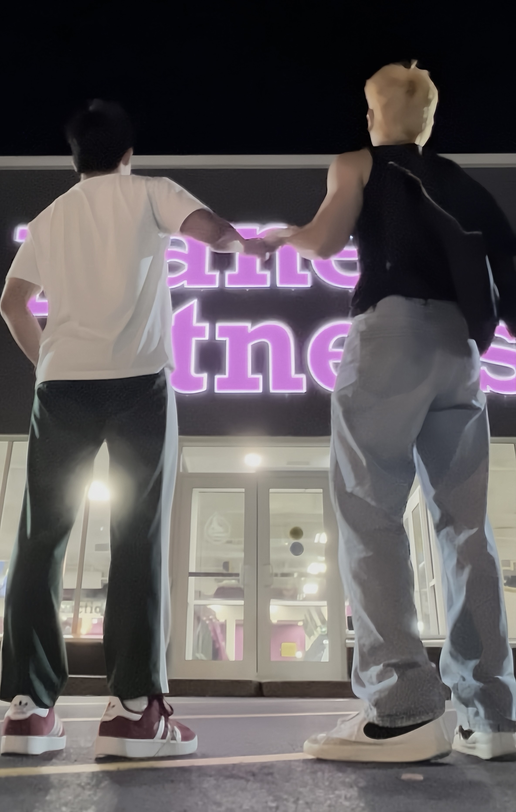
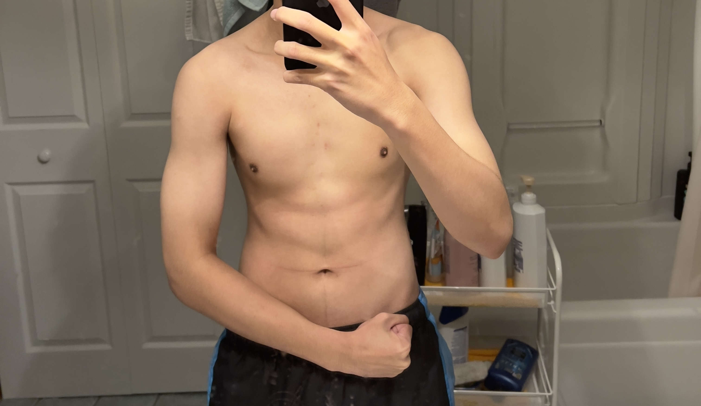
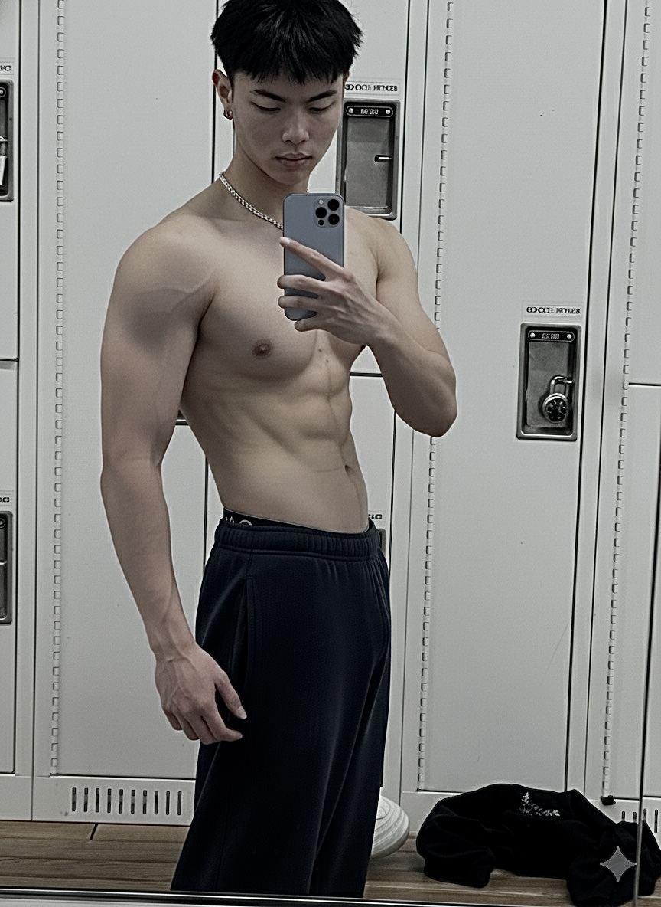

Gym Progress
I didn't start this journey perfect — I started it because I wanted to become better. Every rep, every early morning, every day I showed up even when I didn't feel like it… that's what built my progress. This isn't just about the gym — it's about proving to myself that consistency can reshape your body, your mindset, and your life. If I can do it step by step, you can too.

Me and my bro at 12amDay 1
As you can see, this was my starting point — not perfect, not confident, just determined to change. I didn't know much, but I knew I wanted better for myself. Day by day, rep by rep, I built discipline, strength, and a version of me I'm proud of. Everyone starts somewhere… this was mine.

Day 500
500 days later… this isn't just a different body — it's a different mindset. I stayed when it was hard, pushed when I felt tired, and kept going when no one was watching. This is what discipline looks like when you choose it every single day.

Social Media